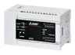
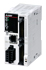
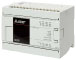
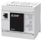
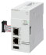

Network/Communication module Ethernet

Ethernet
| Model | Data transmission speed |
Maximum segment length |
Supported protocol | No. of connections | |
|---|---|---|---|---|---|
|  | FX5U CPU module | 100 / 10 Mbps | 100 m (The distance between hub and node) |
|
Total of 8 connections*1*2 (Up to 8 external devices are accessible to one CPU module at a time.) |
|  | FX5UC CPU module | ||||
|  | FX5UJ CPU module | ||||
|  | FX5S CPU module | ||||
 |
FX5-ENET Ethernet module |
|
Total of 32 connections*1*3 (Up to 32 external devices are accessible to one FX5-ENET at a time.) |
||
|  | FX5-ENET/IP EtherNet/IP module |
|
Total of 32 connections*1*5 (Up to 32 external devices are accessible to one FX5-ENET/IP at a time.) |
||
- *1The first device for MELSOFT connection is not included in the number of connections. (The second and the following devices are included.)
- *2The CC-Link IE field network Basic, FTP server, FTP client, SNTP client, Web server and simple CPU communication function are not included in the number of connections.
- *3The CC-Link IE field network Basic are not included in the number of connections.
- *4MQTT and the SMTP client function are compatible with serial number 234**** or later.
- *5The EtherNet/IP communication is not included in the number of connections.